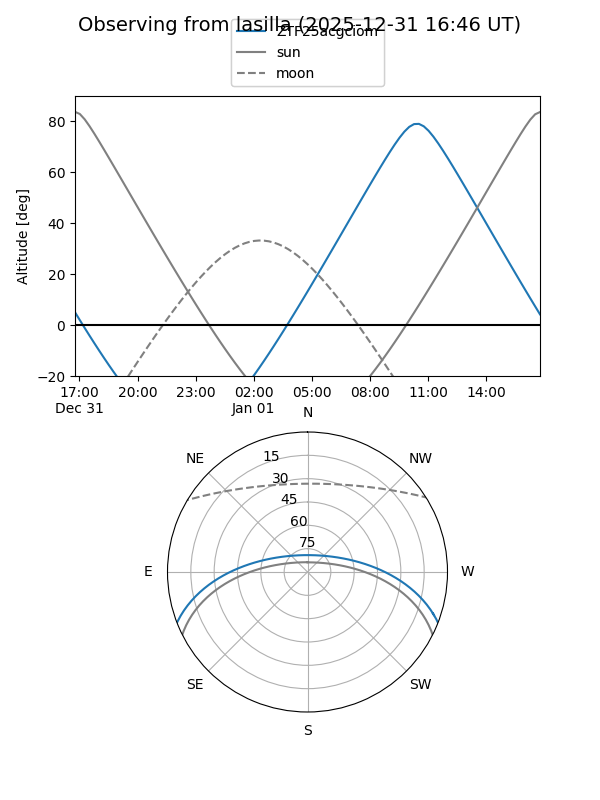
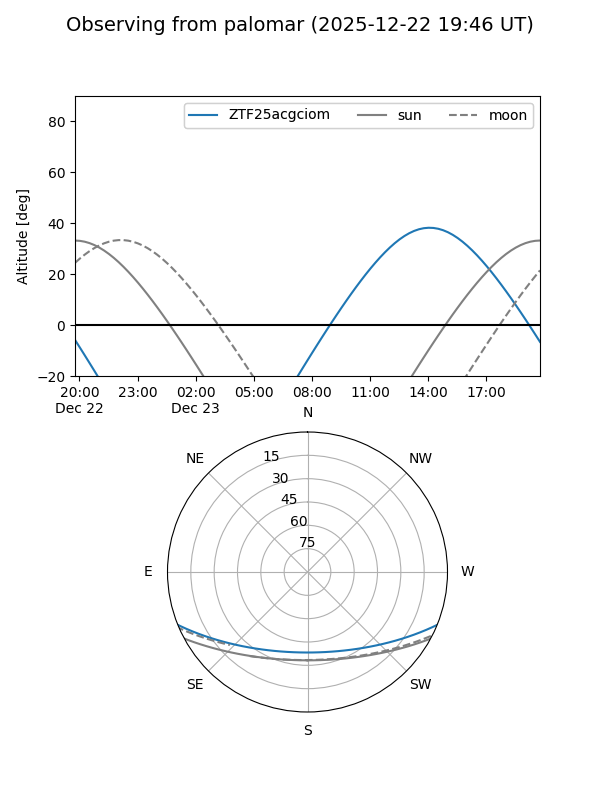

ZTF25acgciom
Target ZTF25acgciom at 2026-01-19 10:45
Aliases and brokers:
FINK: link
Lasair: link
ALeRCE: link
alt names
ZTF25acgciom (ztf,fink_ztf)
Coordinates:
equatorial (ra, dec) = 186.2272,-18.25900
equatorial (HMS+DMS) = 12:24:54.52,-18:15:32.40
galactic (l, b) = (294.1377,+44.15927)
Flags:
likely cv
Photometry:
last atlasc=nan, atlaso=nan, ztfg=12.01
3 atlasc, 15 atlaso, 3 ztfg detections
Lightcurve

Visibility


Additional plots